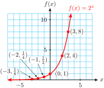
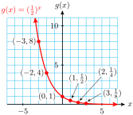
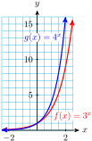
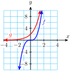
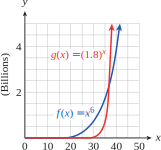

Subsection 7.2.1 Introduction
In
Section 7.1, we studied functions that describe exponential growth or decay. A population of rabbits grew according to the formula
\(~P(t) = 20(1.26)^t~\text{,}\) and a butterfly count decreased by
\(~ B(t) = 3600 (0.88)^t~\text{.}\) These functions are examples of the family of exponential functions. Here are some more examples.
\begin{equation*}
f (x) = 5^x,~~~~ P(t) = 250(1.7)^t,~~~~ \text{and } ~~~~g(n) = 2.4(0.3)^n
\end{equation*}
We define an exponential function as follows.
Definition 7.2.1. Exponential Function.
An exponential function has the form
\begin{equation*}
\blert{f(x) = ab^x},~~~~ \text{ where } ~~~b \gt 0 ~~~\text{ and } ~~~b \ne 1 \text{, } ~~~a \ne 0
\end{equation*}
The positive constant \(b\) is called the base of the exponential function. The constant \(a\) gives the \(y\)-intercept, \((0,a)\text{,}\) of the graph because
\begin{equation*}
f (0) = a \cdot b^0 = a \cdot 1 = a
\end{equation*}
For the examples above, we find that the \(y\)-intercepts are
\begin{align*}
f(0) \amp= 5^0 = 1 \\
P(0) \amp= 250(1.7)^0 = 250\\
g(0) \amp= 2.4(0.3)^0 = 2.4
\end{align*}
Checkpoint 7.2.2. QuickCheck 1.
Example 7.2.4.
During the summer a population of fleas doubles in number every 5 days.
If a population starts with 10 fleas, write a formula for the number of fleas present after \(t\) days.
How many fleas will there be after 1 week (7 days)?
Solution.
-
We let \(P\) represent the number of fleas present after \(t\) days. The original population of 10 fleas doubles not every day, but every 5 days. A table of values for \(P\) would look like this.
| \(t\) |
\(P(t)\) |
\(\hphantom{0000}\) |
| \(0\) |
\(10\) |
\(\hphantom{0000}\) |
| \(5\) |
\(20\) |
\(P(\alert{5}) = 10 \cdot 2^{\alert{1}} = 20\) |
| \(10\) |
\(40\) |
\(P(\alert{10}) = 10 \cdot 2^{\alert{2}} = 40\) |
| \(15\) |
\(80\) |
\(P(\alert{15}) = 10 \cdot 2^{\alert{3}} = 80\) |
| \(20\) |
\(160\) |
\(P(\alert{20}) = 10 \cdot 2^{\alert{4}} = 160\) |
Notice that the original population is multiplied by another factor of 2 every 5 days. We must divide \(t\) by 5 to see how many times the population doubles. The formula for \(P\) is thus
\begin{equation*}
P(t) = 10 \cdot 2^{t/5}
\end{equation*}
We evaluate the function for \(t=\alert{7}\text{.}\) To follow the order of operations, we simplify the power before multiplying by 10. \(~\alert{\text{[TK]}}\)
\begin{equation*}
P(\alert{7}) = 10 \cdot 2^{\alert{7}/5} \approx 10(2.639)=26.39
\end{equation*}
After one week there will be 26 fleas.
Checkpoint 7.2.6. Practice 1.
Subsection 7.2.2 Graphs of Exponential Functions
The graphs of exponential functions have two characteristic shapes, depending on whether the base, \(b\text{,}\) is greater than \(1\) or less than \(1\text{.}\) As typical examples, consider the graphs of \(f (x) = 2^x\) and \(g(x) = \left(\dfrac{1}{2}\right)^x\) shown below. Some values for \(f\) and \(g\) are recorded in the tables.
| \(x\) |
\(f(x)\) |
| \(-3\) |
\(\frac{1}{8}\) |
| \(-2\) |
\(\frac{1}{4}\) |
| \(-1\) |
\(\frac{1}{2}\) |
| \(0\) |
\(1\) |
| \(1\) |
\(2\) |
| \(2\) |
\(4\) |
| \(3\) |
\(8\) |

| \(x\) |
\(g(x)\) |
| \(-3\) |
\(8\) |
| \(-2\) |
\(4\) |
| \(-1\) |
\(2\) |
| \(0\) |
\(1\) |
| \(1\) |
\(\frac{1}{2}\) |
| \(2\) |
\(\frac{1}{4}\) |
| \(3\) |
\(\frac{1}{8}\) |

Notice that \(f(x) = 2^x\) is an increasing function and \(g(x) = \left(\dfrac{1}{2}\right)^x\) is a decreasing function. Both are concave up. In general, exponential functions have the following properties.
Properties of Exponential Functions, \(f(x) = ab^x\text{,}\) \(a \gt 0\).
-
If \(b \gt 1\text{,}\) the function is increasing and concave up;
if \(0 \lt b \lt 1\text{,}\) the function is decreasing and concave up.
The \(y\)-intercept is \((0, a)\text{.}\) There is no \(x\)-intercept.
In the table for \(f(x)\text{,}\) you can see that as the \(x\)-values decrease toward negative infinity, the corresponding \(y\)-values decrease toward zero. As a result, the graph of \(f\) decreases toward the \(x\)-axis, but never touches it, as we move to the left.
The negative \(x\)-axis is a horizontal asymptote for exponential functions with \(b \gt 1\text{,}\) as shown in figure (a).
For exponential functions with \(0 \lt b \lt 1\text{,}\) the positive \(x\)-axis is an asymptote, as illustrated in figure (b).
Checkpoint 7.2.7. QuickCheck 2.
How does the value of \(b\) affect the graph? For increasing functions, the larger the value of the base, \(b\text{,}\) the faster the function grows. In the Example below, we compare two exponential functions with different bases.
Example 7.2.8.
Compare the graphs of \(f(x) = 3^x\) and \(g(x) = 4^x\text{.}\)
Solution.
First, we evaluate each function for several convenient values, as shown in the table.
Then we plot the points for each function and connect them with smooth curves. Note that \(a=1\) for both functions, so their graphs have the same \(y\)-intercept, \((0,1)\text{.}\)
For positive \(x\)-values, \(g(x)\) is always larger than \(f(x)\text{,}\) and is increasing more rapidly. In the figure, we can see that \(g(x) = 4^x\) climbs more rapidly than \(f(x) = 3^x\text{.}\) However, for negative \(x\)-values, \(g(x)\) is smaller than \(f(x)\text{.}\)
| \(x\) |
\(f(x)\) |
\(g(x)\) |
| \(-2\) |
\(\dfrac{1}{9}\) |
\(\dfrac{1}{16}\) |
| \(-1\) |
\(\dfrac{1}{3}\) |
\(\dfrac{1}{4}\) |
| \(0\) |
\(1\) |
\(1\) |
| \(1\) |
\(3\) |
\(4\) |
| \(2\) |
\(9\) |
\(16\) |

Checkpoint 7.2.9. Practice 2.
Checkpoint 7.2.11. QuickCheck 3.
Subsection 7.2.3 Comparing Exponential and Power Functions
We have studied several families of functions, including linear, quadratic, and power functions. Exponential functions are useful because they model growth or decline by a constant factor.
Power Functions vs Exponential Functions.
\(\hphantom{General formula and m}\) |
Power Functions |
Exponential Functions |
General formula |
\(f(x)=kx^p\) |
\(g(x)=ab^x\) |
Description |
variable base and constant exponent |
constant base and variable exponent |
Example |
\(f(x)=2x^3\) |
\(g(x)=2(3^x)\) |
These two families of functions have very different properties, as well.
Example 7.2.13.
Which of the functions shown below is exponential, and which is a cubic power function? Find an equation for each.
| \(x\) |
\(f(x)\) |
| \(-3\) |
\(-54\) |
| \(-2\) |
\(-16\) |
| \(-1\) |
\(-2\) |
| \(0\) |
\(0\) |
| \(1\) |
\(2\) |
| \(2\) |
\(16\) |
| \(3\) |
\(54\) |
| \(x\) |
\(g(x)\) |
| \(-3\) |
\(\frac{2}{27}\) |
| \(-2\) |
\(\frac{1}{4}\) |
| \(-1\) |
\(\frac{2}{3}\) |
| \(0\) |
\(2\) |
| \(1\) |
\(6\) |
| \(2\) |
\(18\) |
| \(3\) |
\(54\) |

Solution.
We can tell that \(g\) is the exponential function because its values increase by a factor of 3 for each unit increase in \(x\text{.}\) The base of the function is \(b=3\text{.}\) We also see from the table that \(a=g(0)=2\text{,}\) so \(g(x)=2(3^x)\text{.}\) Thus, \(f\) must be the power function, \(f(x)=kx^3\text{.}\) To find \(k\text{,}\) we notice that \(f(1)=k\text{,}\) so \(k=2\text{,}\) and \(f(x)=2x^3\text{.}\)
The relationship in
Example 7.2.13 holds true for all increasing power and exponential functions: For large enough values of
\(x\text{,}\) the exponential function will always be greater than the power function, regardless of the parameters in the functions. The figure at left shows the graphs of
\(f(x) = x^6\) and
\(g(x) = 1.8^x\text{.}\) At first,
\(f(x) \gt g(x)\text{,}\) but at around
\(x = 37\text{,}\) \(g(x)\) overtakes
\(f(x)\text{,}\) and
\(g(x) \gt f(x)\) for all
\(x \gt 37\text{.}\)

Checkpoint 7.2.15. Practice 3.
Checkpoint 7.2.16. QuickCheck 4.
Subsection 7.2.4 Exponential Equations
An exponential equation is one in which the variable is part of an exponent. For example, the equation
\begin{equation*}
3^x = 81
\end{equation*}
is exponential.
Many exponential equations can be solved by writing both sides of the equation as powers with the same base. To solve the equation above, we write
\begin{equation*}
3^x = 3^4
\end{equation*}
which is true if and only if \(x = 4\text{.}\)
In general, if two equivalent powers have the same base, then their exponents must be equal also, as long as the base is not \(0\) or \(\pm 1\text{.}\)
In the next Example, we use the laws of exponents to express both sides of the equation as single powers of a common base.
Example 7.2.17.
Solve the following equations. \(~\alert{\text{[TK]}}\)
\(\displaystyle 3^{x-2} = 9^3\)
\(\displaystyle 27 \cdot 3^{-2x} = 9^{x+1}\)
Solution.
Using the fact that
\(9 = \blert{3^2}\text{,}\) we write each side of the equation as a power of
\(3\text{:}\)
\begin{align*}
3^{x-2} \amp = \left(\blert{3^2}\right)^3 \amp \amp \blert{\text{Simplify the right side.}}\\
3^{x-2} \amp = 3^6
\end{align*}
Now we equate the exponents to obtain
\begin{align*}
x - 2 \amp = 6
\end{align*}
The solution is
\(x=8\text{.}\)
We write each factor as a power of
\(3\text{.}\)
\begin{align*}
3^3 \cdot 3^{-2x} \amp= \left(3^2\right)^{x+1}\amp\amp\blert{27=3^3~\text{and}~9=3^2.}
\end{align*}
We use the laws of exponents to simplify each side:
\begin{equation*}
3^{3-2x} = 3^{2x+2}
\end{equation*}
Now we equate the exponents to obtain
\begin{align*}
3 - 2x \amp = 2x + 2\\
-4x =\amp -1
\end{align*}
The solution is
\(x = \dfrac{1}{4}\text{.}\)
Checkpoint 7.2.18. QuickCheck 5.
Checkpoint 7.2.19. Practice 4.
Exponential equations arise frequently in the study of exponential growth.
Example 7.2.20.
In
Example 1 we wrote a formula for a population of fleas that started with 10 fleas and doubles in number every 5 days. How long will it be before there are 10,240 fleas?
Solution.
We set \(P = \alert{10,240}\) and solve for \(t\text{:}\)
\begin{align*}
\alert{10,240} \amp = 10\cdot 2^{t/5}\amp\amp \blert{\text{Divide both sides by 10.}}\\
1024 \amp = 2^{t/5} \amp\amp \blert{\text {Write 1024 as a power of 2.}}\\
2^{10} \amp = 2^{t/5}
\end{align*}
We equate the exponents to get \(10 = \dfrac{t}{5}\text{,}\) or \(t = 50\text{.}\) The population will grow to 10,240 fleas in 50 days.
Checkpoint 7.2.21. QuickCheck 6.